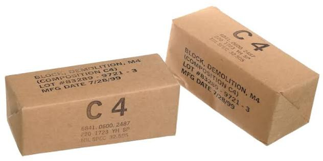
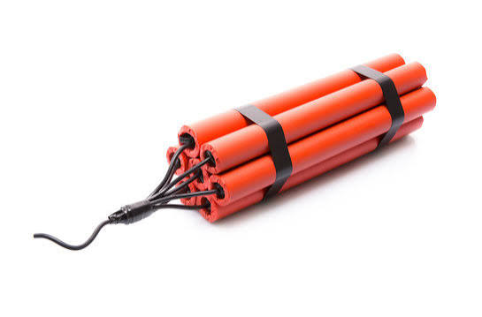

1. Sóng áp lực
Có thể ảnh hưởng tai, phổi và các cơ quan bên trong. Dấu hiệu cần chú ý: đau ngực, khó thở, ho, chóng mặt, ù tai hoặc giảm thính lực.
Trang này giới thiệu lịch sử và đặc điểm của C-4 và TNT, kèm phần riêng về mô hình thực tế do mình tự làm. Chọn một loại để xem.
Tất cả mô hình trên trang này không chứa thuốc nổ thật.
Composition C-4, thuốc nổ dẻo
C-4 là tên gọi tắt của Composition C-4. Chữ “C” là “Composition”, chỉ một họ hỗn hợp thuốc nổ. Vì có thể nhào nặn như đất sét nên nó được gọi là thuốc nổ dẻo (plastic explosive).
Chất nổ chính của C-4 là RDX, được điều chế lần đầu vào cuối thế kỷ 19. Trong Thế chiến thứ hai, các hỗn hợp thuốc nổ dẻo dựa trên RDX được phát triển, mở đầu họ Composition. Quân đội Mỹ cải tiến dần qua các bản C-2, C-3 rồi đến C-4 vào khoảng thập niên 1950 đến đầu thập niên 1960.
C-4 được công binh quân đội dùng để phá hủy cầu, công sự và chướng ngại vật, vì dễ tạo hình và đặt vào đúng vị trí cần phá. Nó được sử dụng rộng rãi trong nhiều cuộc xung đột nửa sau thế kỷ 20, trong đó có Chiến tranh Việt Nam. Ngoài quân sự, các loại thuốc nổ tương tự cũng được dùng trong phá dỡ và xây dựng có kiểm soát bởi người được cấp phép.

Hình ảnh C-4 trong phim và game thường được vẽ khác thực tế. Phần dưới đây mới nói về mô hình của mình.

Mô hình C-4 có chức năng nổ giả bằng bóng bay: khi kích hoạt, bóng bay bên trong nổ “bốp” để tạo hiệu ứng như một vụ nổ trên sân khấu.
Hiệu ứng chỉ là tiếng nổ nhỏ của bóng bay. Khi quan sát, khán giả nên đứng cách mô hình một khoảng vừa phải vì tiếng nổ có thể gây giật mình.
Khối lượng giả định trong bài giảng: 1 kg C-4.
Các màu biểu thị mức cảnh báo trong mô phỏng.Bấm vào sơ đồ để đánh dấu vị trí giả định. Sơ đồ chỉ thể hiện mức cảnh báo trực quan.
| Nhóm | Biểu hiện có thể gặp | Hướng xử trí |
|---|---|---|
| Sóng áp lực | Ù tai, giảm thính lực, đau ngực, khó thở | Đánh giá y tế; cấp cứu nếu khó thở hoặc đau ngực |
| Mảnh văng / vật thể | Vết thương, tổn thương mắt, chấn thương | Tránh tiếp xúc; cần trợ giúp y tế, đặc biệt khi bị thương ở mắt |
| Va đập / bị xô đẩy | Ngã, chấn thương đầu hoặc xương | Không tự di chuyển nếu nghi chấn thương nghiêm trọng; gọi cấp cứu |
| Nhiệt / khói | Bỏng, ho, khó thở do khói | Rời khỏi khói nếu an toàn và tìm trợ giúp y tế |
Tài liệu y khoa phân loại thương tích do vụ nổ theo cơ chế. Các nhóm dưới đây có thể xảy ra đồng thời.
Có thể ảnh hưởng tai, phổi và các cơ quan bên trong. Dấu hiệu cần chú ý: đau ngực, khó thở, ho, chóng mặt, ù tai hoặc giảm thính lực.
Vật liệu xung quanh có thể gây vết thương, chấn thương mắt hoặc tổn thương do va đập. Vết thương nhỏ bên ngoài không bảo đảm tổn thương bên trong nhẹ.
Người có thể bị ngã hoặc va vào vật cứng, dẫn đến chấn thương đầu, xương hoặc các vùng cơ thể khác.
Có thể gây bỏng, khó thở do khói, hoặc nguy cơ từ vật liệu sập và các chất trong môi trường.
Trinitrotoluene, thuốc nổ cổ điển
TNT là viết tắt của trinitrotoluene, tên hóa học đầy đủ là 2,4,6-trinitrotoluene. Ở Việt Nam thường gọi đơn giản là thuốc nổ TNT.
Năm 1863, nhà hóa học người Đức Julius Wilbrand điều chế TNT lần đầu, ban đầu để làm thuốc nhuộm màu vàng. Vì TNT rất ổn định, khả năng gây nổ của nó bị bỏ qua nhiều năm. Đến đầu thế kỷ 20, quân đội Đức đưa TNT vào nạp đạn pháo (khoảng năm 1902), rồi các nước khác lần lượt làm theo.
TNT là loại thuốc nổ chủ lực của Thế chiến thứ nhất và thứ hai, dùng nạp đạn pháo, bom, ngư lôi và mìn. Trong đời sống dân sự, TNT từng được dùng trong khai thác mỏ, phá đá và xây dựng. Ngày nay, TNT còn là đơn vị đo sức nổ: khi nói “một kiloton TNT”, người ta so sánh năng lượng giải phóng với lượng TNT tương đương.

Lưu ý hay nhầm: thỏi màu đỏ có ngòi dây trong phim hoạt hình thật ra là dynamite, do Alfred Nobel phát minh năm 1867. Dynamite là loại khác, không phải TNT.

Bạn có thể xem mô hình C-4 ở mục bên cạnh, bản có hiệu ứng nổ bằng bóng bay.
Khối lượng giả định trong bài giảng: 1 kg TNT.
Các màu biểu thị mức cảnh báo trong mô phỏng.Bấm vào sơ đồ để đánh dấu một vị trí giả định. Các màu biểu thị mức cảnh báo trong mô phỏng.
| Nhóm | Biểu hiện có thể gặp | Hướng xử trí |
|---|---|---|
| Sóng áp lực | Ù tai, giảm thính lực, đau ngực, khó thở | Đánh giá y tế; cấp cứu nếu khó thở hoặc đau ngực |
| Mảnh văng / vật thể | Vết thương, tổn thương mắt, chấn thương | Tránh tiếp xúc; cần trợ giúp y tế, đặc biệt khi bị thương ở mắt |
| Va đập / bị xô đẩy | Ngã, chấn thương đầu hoặc xương | Không tự di chuyển nếu nghi chấn thương nghiêm trọng; gọi cấp cứu |
| Nhiệt / khói | Bỏng, ho, khó thở do khói | Rời khỏi khói nếu an toàn và tìm trợ giúp y tế |
TNT cũng có thể gây các loại chấn thương liên quan đến vụ nổ.
Nguy cơ tổn thương tai, phổi và cơ quan bên trong; triệu chứng có thể không xuất hiện ngay.
Mảnh vật liệu có thể gây vết thương, tổn thương mắt hoặc chấn thương do vật thể va chạm.
Ngã hoặc bị xô vào vật cứng có thể gây chấn thương đầu và các vùng cơ thể.
Nguy cơ bỏng, hít khói hoặc ảnh hưởng bởi môi trường xung quanh.